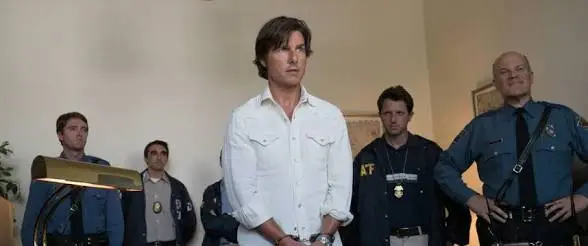

✈️ AMERICAN MADE (2017) — CERTIFIED MGC MS-65

🏛 MGC SUPREME COURT OF CONSENSUS
- ASSET TITLE: American Made (2017)
- OFFICIAL REGISTRY GRADE: Certified MGC MS-65 (Choice Mint State Specimen)
- HIGH BENCH JURISDICTION: Supreme Court Vault
- CASE FILE: #008
- PRESIDING: Judge Sally and Chief Grader MGC
📜 THE INITIAL INQUEST BENCH ASSESSMENT (3-FLAW DEFECT LOG)
- Baseline Bench Assessment: Room Allocation ➔ MS-64 Choice Mint State. Under our strict 5x numismatic magnifying lens, this real-world historical asset securely enters the premium uncirculated registry tier. It derives immense, natural striking power from a raw, unbelievable narrative blueprint that the world’s best screenwriters couldn’t dream of fabricating. However, the temporary base registry ledger must reflect three distinct structural flaws that hold the planchet at MS-64 before final deliberation.
🚨 THE THREE SPECIFIC PLANCHET FLAWS:
1. The Tonal Friction Blemish
- In the final act, as the real-world historical gravity shifts into the dark, punishing realities of the Iran-Contra affair, the breezy, satirical dark-comedy alloy experiences a localized friction against the grim historical data.
2. The Domestic Subplot Wear
- The narrative layout experiences slight contact marks during the repetitive family relocation sequences. The domestic friction regarding moving cash in suitcases slightly stalls the film’s soaring aerial momentum.
3. The Optical Over-Saturation Defect
- The digital cinematography intentionally introduces hyper-saturated, sun-bleached contrast fields to mimic retro 1980s film stocks. Under our strict magnifying lens, this creates noticeable visual grain and exposure bleed that can look like a minor planchet blemish to pristine purists.
⚖ THE APPELLATE REVIEW & REVERSAL ARGUMENTS
The Chief Justice stepped directly up to the high-bench console, throwing a massive executive override that permanently calibrated the record by sustaining two core motions while forcefully overruling the second-act objections based on pure mechanical engine laws.
Motion 1 (The Historical Scuff): SUSTAINED.
- MGC always loves a true story—those represent the absolute finest pieces of cinema because raw reality brings forth intricate story structures that the greatest fictional screenwriters in the world couldn’t dream up in a million lifetimes. However, because no one knows the full, unvarnished, real-world Barry Seal story, this film represents an incomplete puzzle. Doug Liman and the directors turned in an elite performance trying to piece the fragments together, but because the average viewer has never heard of Barry Seal, they are highly likely to accept this cinematic adaptation as 100% absolute historical truth. This fundamental accuracy scuff leaves a permanent, irreversible fingerprint on the layout canvas, permanently barring the asset from ever climbing into the elite MS-70 Pristine Vault.
Motion 2 (The Soaring Aerial Momentum): OVERRULED.
- The Court rules that the initial objections regarding the family transition sequence are completely groundless under a precise engineering lens. This soaring aerial momentum doesn’t stall during the family relocation—it completely gains massive upward traction! The narrative rockets forward as the family moves straight up from a cash-strapped, broke pilot’s existence to a massive, sprawling mansion featuring its own private airport right on the property footprint.
The Cash Logistics Defense.
- The overwhelming explosion of cash supply is not a structural defect; it represents high-velocity momentum injecting pure energy back into the film’s core! The transition from a broke TWA pilot to an unimaginable flood of cartel riches turns the cash supply into a towering logistical crisis. It becomes such an extreme problem that Barry literally does not know where to hide or put it all, transforming the overflowing boxes, stuffed walls, and backyard holes into one of the absolute finest cinematic and comedic highlights of the entire film.
Motion 3 (The Optical Over-Saturation Defect): SUSTAINED.
- Under our strict magnifying lens, the intentional hyper-saturated, sun-bleached contrast fields used to mimic retro 1980s film stocks create undeniable visual grain and heavy exposure bleed. While a less experienced corporate grader might overlook this as a simple stylistic choice, a true master engineer sees it for what it is—a noticeable planchet blemish that disrupts pristine visual purity. This visual saturation scuff remains sustained on the record as an active point of technical circulation wear.
🔍 THE FINAL DECREE & CERTIFIED JUDGMENT
- The Fingerprint Identified: While the film suffers unassailable planchet scuffs due to the historical fiction added to fill the gaps of the true Barry Seal story and the heavy optical over-saturation bleeds, its operational velocity remains completely pristine.
- The Final Executive Verdict: By filtering out the narrative trash and distilling the film down to its raw, high-flying factual charm and Tom Cruise’s charismatic performance, the Supreme Court strikes this film at an immaculate MGC MS-65 Choice Mint State Specimen rating. The numerical stacking order is locked, the Sheldon scale parameters are permanently engraved, and this high-velocity historical coin sits safely on our premier upper shelves. Case closed! ⚖️🏆

• © 2026 MOVIE GRADING CONSENSUS. All Sovereign Rights Reserved.